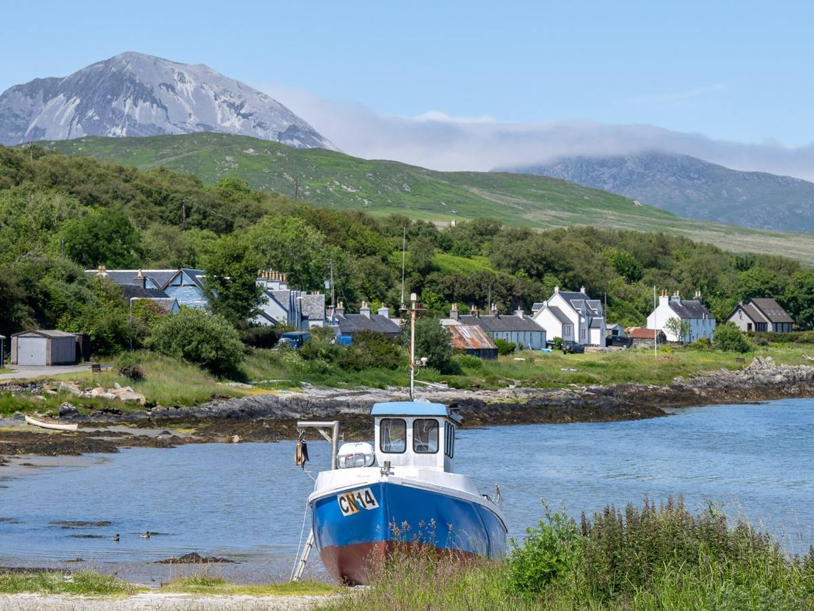

The laird, Archibald Campbell, licensed the first distillery here in 1810. It changed hands through the 1800s, and in 1901 the tenants stripped it and walked away.
By the 1950s Jura's population had fallen to around 250. Two landowners, Robin Fletcher and Tony Riley-Smith, rebuilt the distillery to give the island work, with tall stills designed by William Delmé-Evans to make a lighter, more Highland-style whisky. It started distilling again in 1963, doubled to four stills in 1978, and has belonged to Whyte & Mackay since 1994.
George Orwell finished Nineteen Eighty-Four at Barnhill, a remote farmhouse at the north end of the island, in the late 1940s.
Look up: the three Paps of Jura rise right behind Craighouse. Beinn an Òir, the highest, is 785 metres.
